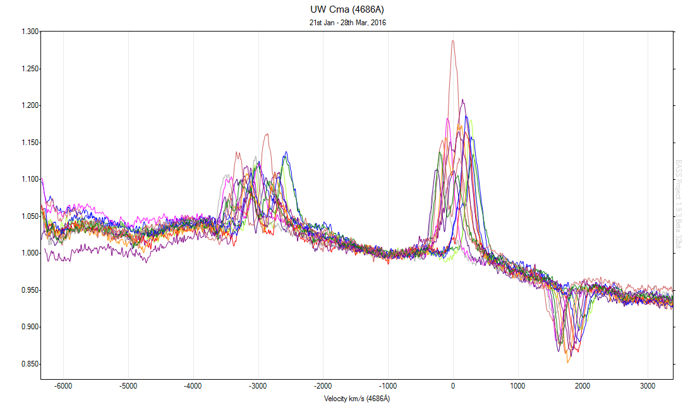
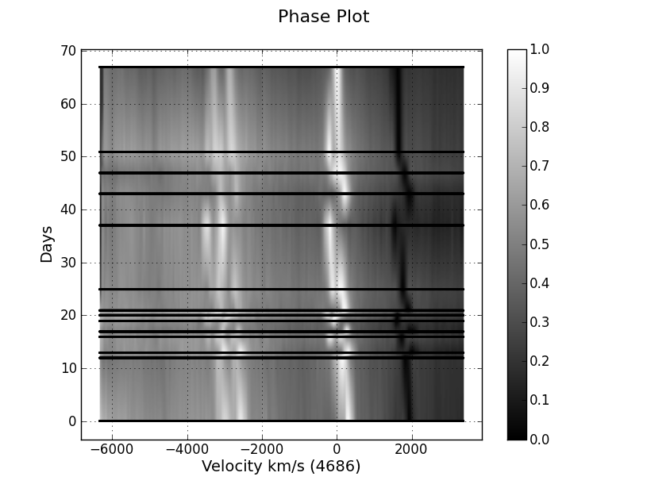
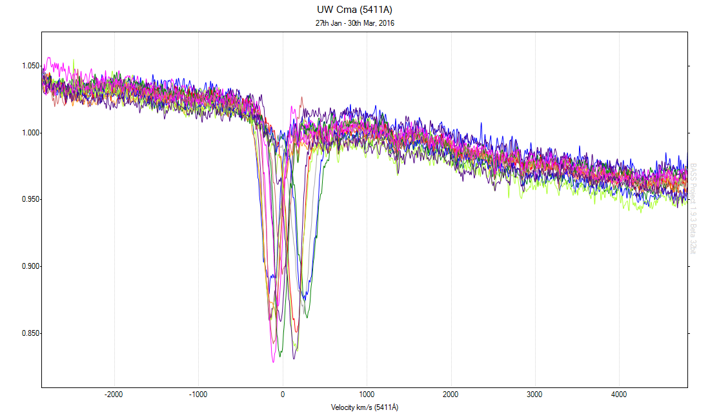
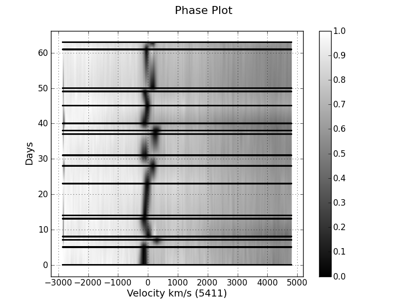

Datasets of the rare blue supergiant UW Canis Majoris - a eclipsing contact binary. Lhires III spectra acquired at two target wavelengths, He II at 4686Å and 5411Å, over a 2 month time frame to coordinate with BRITE-Constellation satellite photometric observations.



